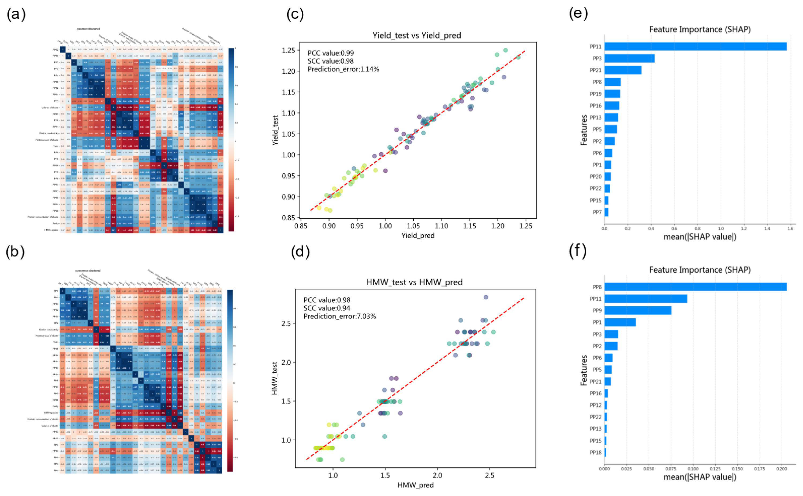
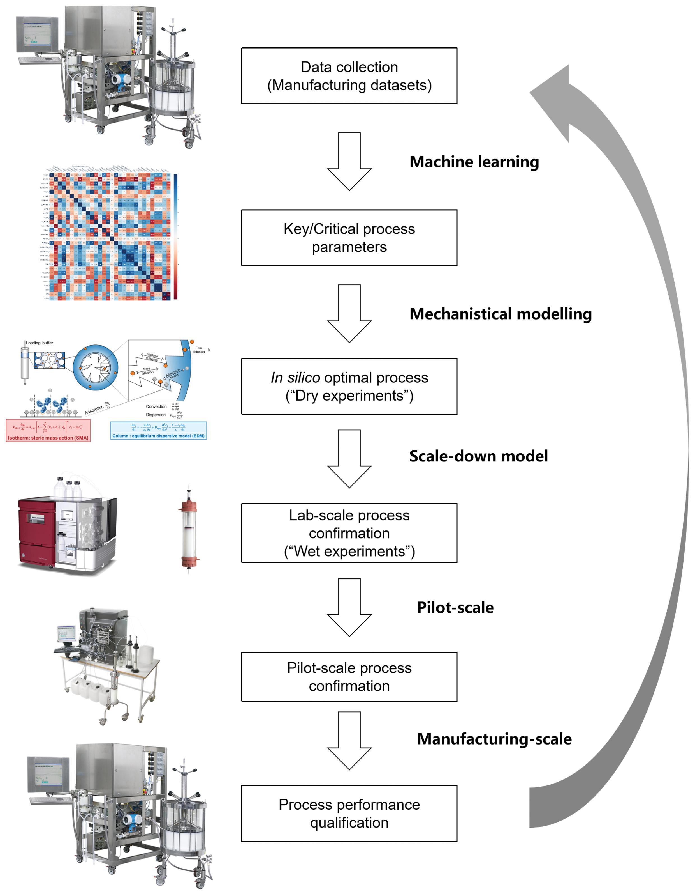
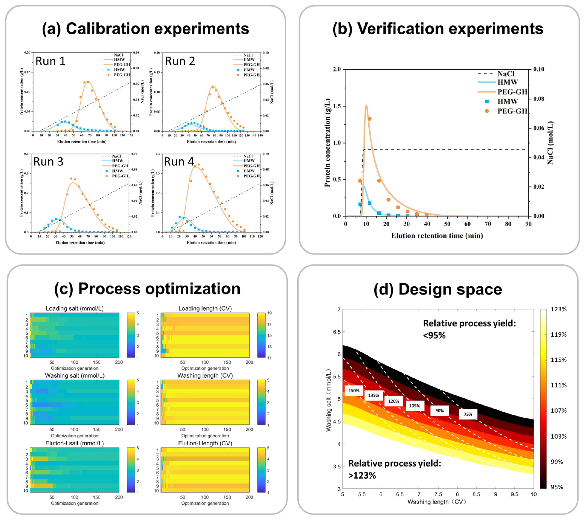
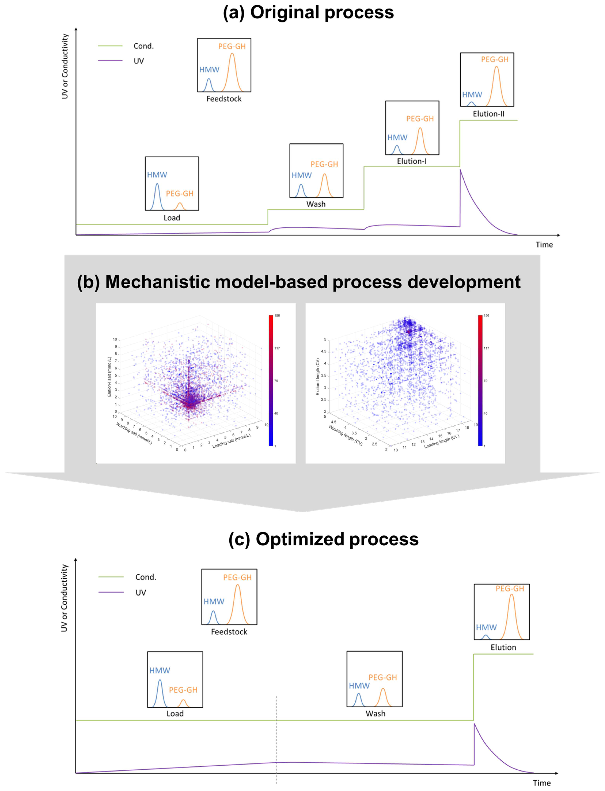
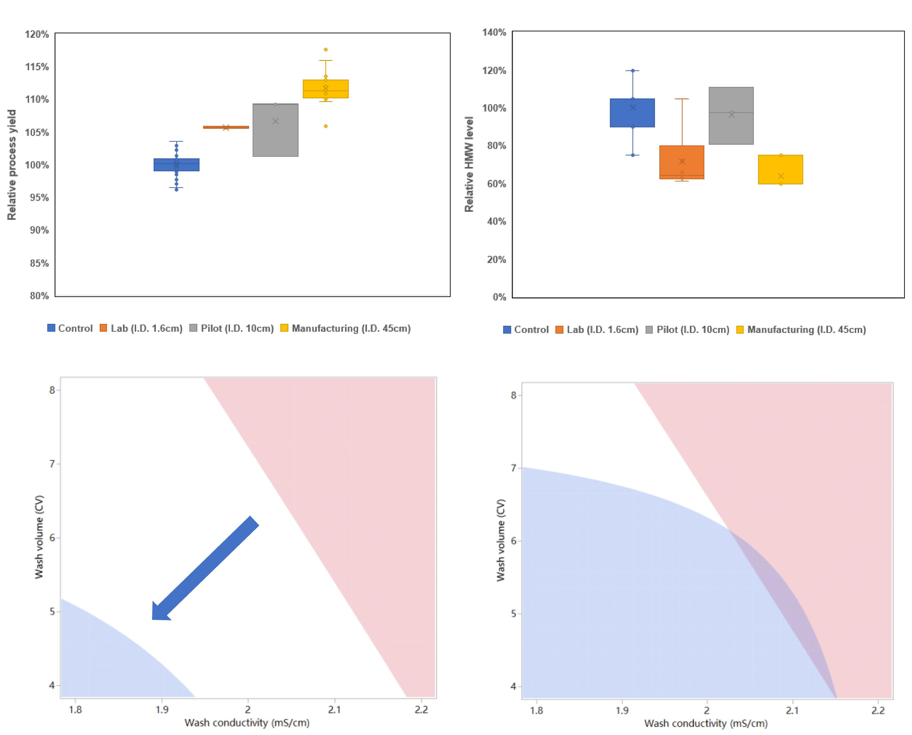

📋 一、概要
本研究针对生物制药下游纯化工艺中的核心挑战——收率与纯度的权衡问题，创新性地提出了AI/ML与机理模型混合优化框架。研究团队基于长春金赛药业与浙江大学的合作，利用423个商业化生产批次、跨越13个月的数据，成功识别出3个关键工艺参数（30个候选参数中的关键少数）。
+12%
收率提升
-33%
HMW杂质降低
423
生产批次数据
40,000+
计算机模拟次数
核心成果： 优化工艺在实验室（n=3）、中试（n=3）和商业化规模（n=18）均得到验证，每年预计节省成本数百万美元。
📖 二、背景
2.1 传统优化方法的局限性
| 传统方法 | 局限性 |
|---|---|
| 单因素实验 (OFAT) | 无法捕捉参数间交互作用 |
| 实验设计 (DoE) | 资源密集，通常需要6个月以上；统计降维限制复杂系统分析 |
| 常规优化策略 | 在收率和纯度之间存在固有权衡（Trade-off） |
2.2 AI/ML应用现状
典型应用案例：
- 单克隆抗体澄清： ANN预测深度过滤器装载容量 R²=0.98，COG降低10%
- CHO细胞培养： ANN驱动优化，抗体产量增加48%
- 层析控制： 数字孪生系统，洗脱曲线预测误差<2%
2.3 纯AI/ML与纯机理模型的对比
AI/ML 优势
- 模式识别能力强
- 处理非线性关系
- 大数据分析能力
局限性
- "黑箱"特性
- 外推能力受限
- 可解释性差
机理模型 优势
- 可解释性强
- 外推能力好
- 物理意义明确
局限性
- 变量多时计算量大
- 需要专业参数
- 校准数据需求
🎯 三、研究目的
提出四个核心目标：建立参数筛选协议 → 建立机理模型 → 实施优化策略 → 跨规模验证
30→3
参数筛选
3
验证规模
>90%
工作量减少
⚠️ 四、问题痛点
核心痛点：收率与纯度的权衡
在PEGylated蛋白纯化过程中，收率（Yield）和高分子量杂质（HMW）去除之间存在强烈的负相关。
传统工艺参数范围内，收率每提升1%，HMW杂质水平通常会同步上升。

图1：Pearson和Spearman相关性热图分析
参数复杂性：30个输入参数
涉及直接输入参数、间接输入参数、输出参数和关键质量属性(CQA)的复杂系统。
💡 五、解决方案
5.1 混合框架概述
① 数据收集
② 数据预处理
③ ML识别关键参数
↓
④ 机理建模优化
↓
⑤ 规模缩小验证
↓
⑥ 规模放大验证
↓
⑦ PPQ验证

图2：混合优化工作流程图
5.2 关键创新点
🆕 商业数据首次应用
首次将商业化生产数据用于ML优化
🤝 ML+机理协同
ML筛选关键参数，机理模型精准优化
⚡ 打破权衡
突破历史数据范围，探索新工艺窗口
🔬 六、研究方法
6.1 数据来源
| 项目 | 详情 |
|---|---|
| 数据规模 | 423个独立生产批次 |
| 时间跨度 | 13个月（2023年8月至2024年8月） |
| 参数数量 | 30个不同的过程参数/批次 |
| 最终分析数据集 | 400个代表性批次 |
6.2 机器学习工作流
评估算法：Random Forest, SVM, XGBoost, LightGBM, Neural Network
模型验证：5折交叉验证
图3：机器学习关键结果 - 相关性热图与SHAP分析
6.3 机理模型
AEX柱机理模型 = EDM (质量传递) + SMA (吸附平衡)
| 模型参数 | 符号 | HMW值 | Mono-PEG值 |
|---|---|---|---|
| 特征电荷 | ν | 1.02 | 1.45 |
| 平衡系数 | keq | 0.11 | 0.08 |
| 动力学系数 | kkin | 3.52 | 0.76 |
| 屏蔽因子 | σ | 2.39×10⁴ | 1.52×10⁴ |

图4：机理模型校准与验证结果
📊 七、研究结果
7.1 ML关键发现
Top 3 关键工艺参数（SHAP分析确认）：
- Load Conductivity (PP8) — 负载电导率
- Wash-1 Conductivity (PP11) — 洗涤-1电导率
- Wash-2 Conductivity (PP13) — 洗涤-2电导率
7.2 优化效果

图5：工艺改进 - 原工艺→优化工艺对比
+12%
收率提升
-33%
HMW降低
3.19%
参数CV值
7.3 规模验证结果

图6：规模确认与稳健性评估
| 规模 | 柱体积 | 运行次数 | 收率改善 | HMW改善 |
|---|---|---|---|---|
| 实验室 | 46 mL | n=3 | +6%~+12% | -4%~-33% |
| 中试 | 1.8 L | n=3 | +6%~+12% | -4%~-33% |
| 商业化 | 实际规模 | n=18 | +6%~+12% | -4%~-33% |
💰 经济价值：通过6次完整规模PPQ运行验证，预期每年节省成本数百万美元！
✅ 八、结论
"超过40,000次计算机优化场景成功打破收率-纯度权衡"
—— 收率提高12%，HMW杂质减少33%
—— 收率提高12%，HMW杂质减少33%
主要结论
- 混合框架有效性验证：AI/ML成功识别了30个候选参数中的3个关键工艺参数
- 量化改善：收率提高12%，HMW杂质减少33%，HMW<1%
- 规模放大验证成功：通过6次完整规模PPQ运行验证，持续展示可放大性和工艺稳健性
- 监管路径可行：工艺变更获批为中等变更
框架优势
| 优势 | 说明 |
|---|---|
| 高效性 | 实验工作量减少超过90% |
| 可放大性 | 跨设备规模应用 |
| 监管合规性 | 数据驱动洞察与机理理解相结合 |
| 成本效益 | 商业化过程改进，年节省数百万美元 |
💬 九、讨论
9.1 方法优势
- 商业化数据vs实验室数据：商业化数据更能代表真实过程变异
- ML与机理协同：ML引导机理模型聚焦关键变量，机理模型突破ML的历史数据范围限制
- 实际工业可行性：工艺变更无需重大修改
9.2 局限性
数据依赖
可靠ML预测需要>30批次数据
CQA范围
当前聚焦HMW，其他CQA待整合
离线优化
缺乏实时控制能力
9.3 未来展望
- 实时PAT集成：在线拉曼/近红外光谱
- 数字孪生系统：实时过程控制
- 智能生物制造：AI驱动的过程控制，自动化、自适应制造系统
📎 附录
论文元数据
| 项目 | 内容 |
|---|---|
| 期刊 | MABS, 2026, VOL. 18, NO. 1 |
| DOI | 10.1080/19420862.2026.2644662 |
| 机构 | 长春金赛药业股份有限公司；浙江大学 |
| 发表时间 | 2026年2月26日接受 |
缩写词表
AI 人工智能
ML 机器学习
AEX 阴离子交换层析
CPP 关键工艺参数
CQA 关键质量属性
DoE 实验设计
HMW 高分子量
PPQ 工艺性能确认
EDM 平衡弥散模型
SMA 立体质量作用模型